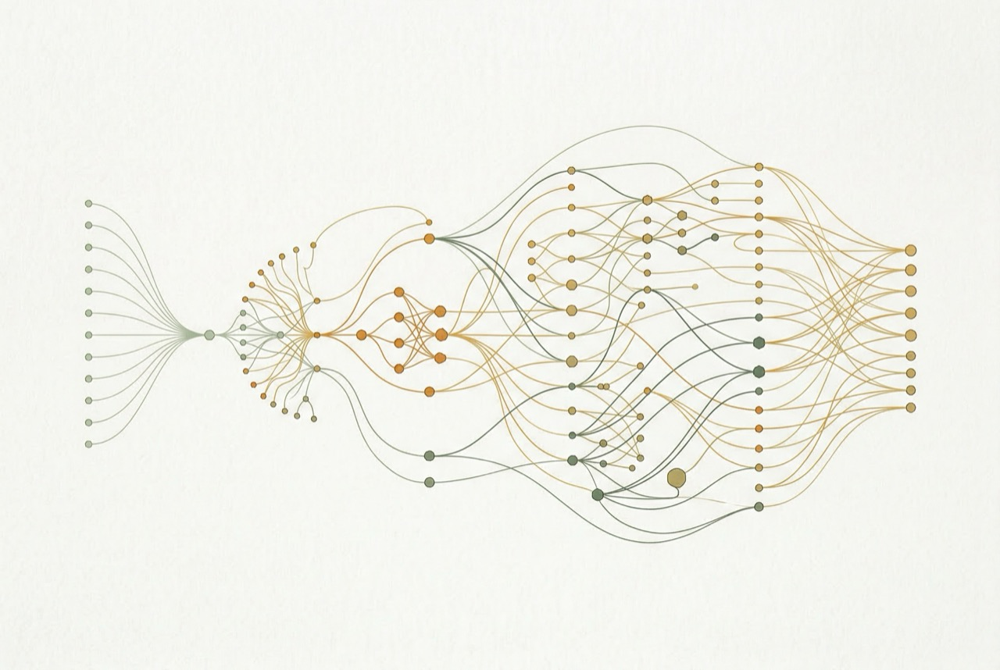

On a Friday afternoon, I handed a client access to an AI system. By Sunday evening, it had produced 450 fully written, SEO-optimized, quality-checked articles — each one unique, each drawing on proprietary property data their competitors couldn't access.
When the client opened their content management system on Monday morning, their reaction was two words: "Genuinely amazing."
Here's exactly how it worked. And why it wasn't just "prompting ChatGPT."
The Client and Their Problem
The client was Propertybook.co.zw — Zimbabwe's largest property portal. They had serious domain authority, consistent traffic, and a database of 7,000+ active listings. They also had a blog that wasn't doing much, a content team that was overwhelmed, and 4,000+ high-intent keywords they were ranking 2nd–6th for with no content directly targeting them.
The old approach: one freelancer, one article, two weeks, ~$200 per piece. For their keyword opportunity, they would have needed years and a six-figure content budget to make a dent.
They came to me with a specific brief: no AI slop. They'd seen what generic generated content does to search rankings. They wanted articles with genuine insights — real market data, real location-specific information, real competitive advantages. They wanted something their competitors couldn't just replicate with their own ChatGPT subscription.

The Architecture: 6 Steps, Fully Automated
I built the system in Coda.io — a low-code platform I've used to build 20+ enterprise systems. Here's why that matters, and what each step does.
-
01
Keyword Selection
The system queries Google Search Console and ahrefs APIs to identify the single highest-ROI keyword opportunity from the client's tracked universe of 4,000+ terms. It weighs search volume, competition, current ranking position, and estimated click-through rate to prioritize what to write next.
-
02
Competitor Research
SerpAPI pulls the top 5 ranking articles for that keyword. Scrapestack fetches and parses their full content. Claude analyzes them for structure, depth, angles covered, and — critically — what they're missing. Every article the system writes is designed to fill gaps, not replicate what already ranks.
-
03
Private Database Integration
This is the secret ingredient. Claude generates a SQL-like query against the client's proprietary property database (7,000+ listings with price, location, bedroom count, recent sales trends, suburb-level metrics). The system pulls real data that no competitor has access to. Every article includes statistics and trends derived directly from the client's own listing data.
-
04
EEAT Assembly
Google's EEAT framework (Experience, Expertise, Authority, Trust) penalizes generic AI content. The system explicitly addresses each signal: location-specific data from the Google Maps API, market analysis drawn from the private database, and dynamic writing guidelines that match the content type (neighborhood guide, investment analysis, buyer's guide, etc.).
-
05
Generation + QA
Claude generates the article in structured JSON — headline, intro, each section, meta description, FAQs. A second Claude pass performs automated quality assurance: checking for keyword density, EEAT signals, brand voice compliance, factual accuracy against the database, and completeness. Articles that fail QA are flagged for human review, not published.
-
06
CMS + Performance Tracking
Every article enters the CMS with status tracking from idea through publication. After publishing, the system monitors each article's clicks, CTR, and ranking position via GSC — feeding that data back to influence which keywords to prioritize next.
Why Low-Code? And Why It Worked
Most developers would've scoped this as a multi-month React/Node.js build. I built the entire prototype in Coda.io in under two weeks.
That's not a corner cut — it's a strategic choice. Low-code prototyping means the client can see it working with real data before any production infrastructure is committed. Every edge case, every prompt failure, every API quirk surfaces in the prototype where it's cheap to fix. By the time I'm writing production code, the system is already battle-tested.
"Overall, I am so impressed with how all of these components are working together. Building an equivalent system like this purely via manual code would be several months of a dedicated dev's effort." — Rohan, Resume Worded
In this case, the Coda prototype became the production system. It runs 200K+ monthly invocations across five custom Coda packs I built specifically for this kind of work: OpenAI Vision, PDF.co, Google Image Search, the Scrapin LinkedIn API, and my Claude 3.5+ pack.
The Results
450 articles in 48 hours. Not 450 variations of the same template — 450 distinct articles, each targeting a different keyword, each incorporating unique data from the property database, each structured differently based on search intent.
Six months later, the average article had improved its Google ranking by two positions. The articles drawing on proprietary database data performed best — which validated the core hypothesis. The competitive advantage wasn't AI generation; it was access to data no competitor had.
The client's production costs dropped significantly. Their time-to-publish went from two weeks to a few hours of human review per article. And they built a feedback loop that gets smarter over time — the GSC data informs the next round of keyword selection, which informs the next round of articles.
What This Means for You
The lesson isn't "use Claude to write your blog posts." It's that content at scale becomes possible — and competitive — when you combine AI generation with proprietary data and real quality controls.
If you have a database, a CRM, internal analytics, or any data source your competitors don't have access to, there's almost certainly a version of this system that applies to your business. The AI is the engine. Your data is the fuel. Anyone can rent the engine; you're the only one with the fuel.